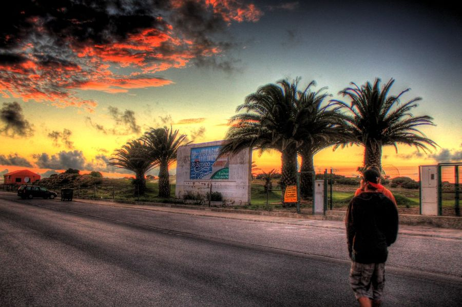
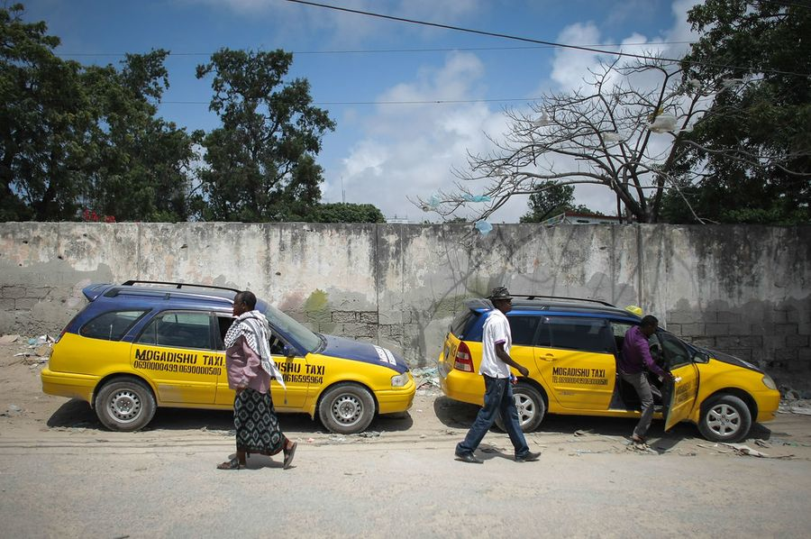

🇺🇸 アメリカ 9件
 包括的な許認可改革法案が下院へ。批判派は阻止を求めるA sweeping permitting reform bill is headed to the House. Critics want to stop itトランプ大統領は、連邦のインフラおよびエネルギー事業の承認を迅速化する超党派法案を支持している。批判派は、それが代償を伴う形で進められると述べている。
包括的な許認可改革法案が下院へ。批判派は阻止を求めるA sweeping permitting reform bill is headed to the House. Critics want to stop itトランプ大統領は、連邦のインフラおよびエネルギー事業の承認を迅速化する超党派法案を支持している。批判派は、それが代償を伴う形で進められると述べている。 トランプ政権によるSNAP削減が無料の学校給食を脅かすTrump Administration’s Cuts to SNAP Threaten Free School Mealsトランプ政権による補充的栄養支援プログラム（SNAP）の削減と規制変更案は、学校の昼食と朝食にも影響を及ぼすことになる。
トランプ政権によるSNAP削減が無料の学校給食を脅かすTrump Administration’s Cuts to SNAP Threaten Free School Mealsトランプ政権による補充的栄養支援プログラム（SNAP）の削減と規制変更案は、学校の昼食と朝食にも影響を及ぼすことになる。 ニューヨークで感謝祭パレードのバルーンの空気が抜かれたThanksgiving Parade Balloons Are Deflated in New York強力な嵐のためメイシーズの感謝祭デーパレードが延期された後、作業員らは悪天候が到来する前にバルーンの空気を抜くため夜通し作業した。
ニューヨークで感謝祭パレードのバルーンの空気が抜かれたThanksgiving Parade Balloons Are Deflated in New York強力な嵐のためメイシーズの感謝祭デーパレードが延期された後、作業員らは悪天候が到来する前にバルーンの空気を抜くため夜通し作業した。 嵐が感謝祭の移動を混乱させる。そして、FCCがABCの言論の自由を侵害したと判事は言うStorms disrupt Thanksgiving travel. And, FCC violated ABC's free speech, judge says東海岸の天候は、この休暇中の大きな懸念事項で、沿岸部の洪水につながる可能性がある。そして判事は、FCCはトランプを風刺したことでABCを処罰できないと述べた
嵐が感謝祭の移動を混乱させる。そして、FCCがABCの言論の自由を侵害したと判事は言うStorms disrupt Thanksgiving travel. And, FCC violated ABC's free speech, judge says東海岸の天候は、この休暇中の大きな懸念事項で、沿岸部の洪水につながる可能性がある。そして判事は、FCCはトランプを風刺したことでABCを処罰できないと述べた 「良い食事の思い出」：第二次世界大戦中、食がもたらした変化'Memories of a Good Meal': How food made a difference during WWIIニューオーリンズのシェフ、アロン・シャヤ氏の新しい料理本は、食を中心に据えた第二次世界大戦中のレジリエンスの物語を伝えている。
「良い食事の思い出」：第二次世界大戦中、食がもたらした変化'Memories of a Good Meal': How food made a difference during WWIIニューオーリンズのシェフ、アロン・シャヤ氏の新しい料理本は、食を中心に据えた第二次世界大戦中のレジリエンスの物語を伝えている。 アルバカーキのインディアン・プエブロ・キッチンでは、ネイティブアメリカンの料理が主役At Albuquerque's Indian Pueblo Kitchen, Native American dishes are the main courseニューメキシコ州アルバカーキの博物館では、グリーンチリ・シチューや甘いビスコチートといった料理もあり、レストランは展示と同じくらい人々を惹きつけている。
アルバカーキのインディアン・プエブロ・キッチンでは、ネイティブアメリカンの料理が主役At Albuquerque's Indian Pueblo Kitchen, Native American dishes are the main courseニューメキシコ州アルバカーキの博物館では、グリーンチリ・シチューや甘いビスコチートといった料理もあり、レストランは展示と同じくらい人々を惹きつけている。 物語のある一品、料理史家マイケル・トゥイッティと過ごすサンクスギビングA dish with a story, Thanksgiving with culinary historian Michael TwittyNPRのレイラ・ファデルが、料理史家マイケル・トゥイッティを自宅のキッチンに迎え、南部コーンの先駆けであるクシュを作るサンクスギビングの料理セッションを行う。
物語のある一品、料理史家マイケル・トゥイッティと過ごすサンクスギビングA dish with a story, Thanksgiving with culinary historian Michael TwittyNPRのレイラ・ファデルが、料理史家マイケル・トゥイッティを自宅のキッチンに迎え、南部コーンの先駆けであるクシュを作るサンクスギビングの料理セッションを行う。 強力な嵐がホリデーの旅行を混乱させ、メイシーズ・サンクスギビング・デイ・パレードが延期にPowerful storms disrupt holiday travel, as Macy's Thanksgiving Day Parade is postponed強風、高潮、大雨、洪水をもたらした極端な気象により、推定8150万人の旅行計画に影響が出ると予想される。
強力な嵐がホリデーの旅行を混乱させ、メイシーズ・サンクスギビング・デイ・パレードが延期にPowerful storms disrupt holiday travel, as Macy's Thanksgiving Day Parade is postponed強風、高潮、大雨、洪水をもたらした極端な気象により、推定8150万人の旅行計画に影響が出ると予想される。
アイオワ州でのアジ化鉛爆発後、EPAが鉛汚染の検査を実施EPA testing for lead contamination after lead azide detonation in Iowa陸軍は国内に備蓄されていたアジ化鉛を爆発させた。現在、EPAのチームが土壌、大気、水に鉛汚染がないか検査している。🇬🇧 イギリス 19件
 英国のニート数が100万人を下回る、バーナム氏が危機への取り組みを推進する中Number of Neets in UK falls below a million as Burnham pushes to tackle crisis教育、雇用、訓練のいずれにも就いていない若者の最新数値は、過去10年で最高水準に依然として近い ビジネス・ライブ ― 最新情報 英国政治ライブ
英国のニート数が100万人を下回る、バーナム氏が危機への取り組みを推進する中Number of Neets in UK falls below a million as Burnham pushes to tackle crisis教育、雇用、訓練のいずれにも就いていない若者の最新数値は、過去10年で最高水準に依然として近い ビジネス・ライブ ― 最新情報 英国政治ライブ 日常の必需品に関するブラックフライデーのお買い得品18件を見つけたWe found 18 Black Friday deals on the day-to-day essentials everyone usesこのブラックフライデーには地味な必需品を買いだめしよう——後で自分に感謝するはずだ。お気に入りのバスタオルがブラックフライデーでセール中。究極ガイドをご覧ください。
日常の必需品に関するブラックフライデーのお買い得品18件を見つけたWe found 18 Black Friday deals on the day-to-day essentials everyone usesこのブラックフライデーには地味な必需品を買いだめしよう——後で自分に感謝するはずだ。お気に入りのバスタオルがブラックフライデーでセール中。究極ガイドをご覧ください。 イスラエルの攻撃で今月これまでに学童16人が死亡、ガザの省が発表Israeli strikes kill 16 schoolchildren so far this month, Gaza ministry saysこの発表は、ガザ市の住宅用アパートへの空爆で15歳と13歳の姉妹が死亡したことを受けたもので、イスラエルの攻撃により少なくとも16人の学童が死亡した。
イスラエルの攻撃で今月これまでに学童16人が死亡、ガザの省が発表Israeli strikes kill 16 schoolchildren so far this month, Gaza ministry saysこの発表は、ガザ市の住宅用アパートへの空爆で15歳と13歳の姉妹が死亡したことを受けたもので、イスラエルの攻撃により少なくとも16人の学童が死亡した。
「勝利を誇示するためのものとは到底言えない」：ジェンスン・フアンの新しいジャケットの意味‘Not really the thing to take a victory lap in’: the meaning of Jensen Huang’s new jacketエヌビディアのトップが新しい装いで戻ってきた。しかし、革から綿への切り替えは、権力とリーダーシップについて何を語るのか。• Fashion Statementを配信で受け取らないで グラスゴーの信じられないほど支離滅裂な『アラジン』で、マミー・グースはすっかりおしまいMammy Goose is well and truly cooked in Glasgow’s incredibly random Aladdinグラスゴー、キングス劇場 不快なステレオタイプは排除されたが、エレイン・C・スミス主演のこの華やかなパントマイムは、無関係な素材を大量に無理やり詰め込んでいる…
グラスゴーの信じられないほど支離滅裂な『アラジン』で、マミー・グースはすっかりおしまいMammy Goose is well and truly cooked in Glasgow’s incredibly random Aladdinグラスゴー、キングス劇場 不快なステレオタイプは排除されたが、エレイン・C・スミス主演のこの華やかなパントマイムは、無関係な素材を大量に無理やり詰め込んでいる… 政治家、インドで最も貧しい州で娘の結婚式に40万人の客を招くPolitician hosts 400,000 guests at daughter’s wedding in India’s poorest state殺人罪で起訴された国会議員アナント・シン氏が主催する結婚式のためにヘリパッドが6カ所建設され、500人の料理人が宴を用意した。神話的な…に匹敵しようとするには勇敢な人でなければならないスティック型掃除機11機種をレビューし、$800のダイソンに匹敵する$280のモデルを見つけたI reviewed 11 stick vacs and found a $280 model that challenges a $800 Dyson最高級のコードレス掃除機をテストしたところ、$140未満で最高級機に引けを取らない1台が見つかった。お気に入りの13機種で掃除をもっと楽に
政治家、インドで最も貧しい州で娘の結婚式に40万人の客を招くPolitician hosts 400,000 guests at daughter’s wedding in India’s poorest state殺人罪で起訴された国会議員アナント・シン氏が主催する結婚式のためにヘリパッドが6カ所建設され、500人の料理人が宴を用意した。神話的な…に匹敵しようとするには勇敢な人でなければならないスティック型掃除機11機種をレビューし、$800のダイソンに匹敵する$280のモデルを見つけたI reviewed 11 stick vacs and found a $280 model that challenges a $800 Dyson最高級のコードレス掃除機をテストしたところ、$140未満で最高級機に引けを取らない1台が見つかった。お気に入りの13機種で掃除をもっと楽に 抗議者がポール・スミスのブックトークを妨害Protesters disrupt Paul Smith's book talkそのファッション企業は、ブックツアーのイベントでの抗議を受け、動物福祉に取り組んでいると述べている。ヒースロー空港の第3滑走路計画は「中止すべき」Heathrow third runway plans 'should be grounded'運輸委員会によると、この滑走路計画は気候テストを含む課題に十分に対処していない。
抗議者がポール・スミスのブックトークを妨害Protesters disrupt Paul Smith's book talkそのファッション企業は、ブックツアーのイベントでの抗議を受け、動物福祉に取り組んでいると述べている。ヒースロー空港の第3滑走路計画は「中止すべき」Heathrow third runway plans 'should be grounded'運輸委員会によると、この滑走路計画は気候テストを含む課題に十分に対処していない。 生活費支援の巡回イベント、利用可能な支援を紹介Cost of living roadshow highlights support on offerシアネスで開かれるこのイベントは、資金不足に直面している人々のための危機・レジリエンス基金から資金提供を受けている。
生活費支援の巡回イベント、利用可能な支援を紹介Cost of living roadshow highlights support on offerシアネスで開かれるこのイベントは、資金不足に直面している人々のための危機・レジリエンス基金から資金提供を受けている。 冬の最悪な点は寒さではない…騒音だ | エイドリアン・チャイルズThe worst thing about winter isn’t the cold … it’s the noise | Adrian Chilesパブに座り、凍えるような寒さを遮るためにドアが閉められている中、友人と私はおしゃべりの騒々しさでほとんど互いの声が聞こえなかった。冬にはある一面が…ヴェルーシュカ：87歳で亡くなった世界初のスーパーモデルの一人、その印象的な写真Veruschka: Striking images of one of the world's first supermodels, who has died aged 87ヴェルーシュカは、1960年代に世界的なファッションスターの先駆者の一人となったモデルでアーティストだった。
冬の最悪な点は寒さではない…騒音だ | エイドリアン・チャイルズThe worst thing about winter isn’t the cold … it’s the noise | Adrian Chilesパブに座り、凍えるような寒さを遮るためにドアが閉められている中、友人と私はおしゃべりの騒々しさでほとんど互いの声が聞こえなかった。冬にはある一面が…ヴェルーシュカ：87歳で亡くなった世界初のスーパーモデルの一人、その印象的な写真Veruschka: Striking images of one of the world's first supermodels, who has died aged 87ヴェルーシュカは、1960年代に世界的なファッションスターの先駆者の一人となったモデルでアーティストだった。 「私はとても攻撃的だった。どの学校からも追い出された」…ジュリー・デルピーが演技、怒り、略奪的な監督たちについて語る‘I was very aggressive. They threw me out of every school’ … Julie Delpy on acting, anger and predatory directors有名になった役柄から30年を経て、「トリコロール／白の愛」と「ビフォア」三部作のスターは、脚本家兼監督としてこれまで以上に多忙になっている。
「私はとても攻撃的だった。どの学校からも追い出された」…ジュリー・デルピーが演技、怒り、略奪的な監督たちについて語る‘I was very aggressive. They threw me out of every school’ … Julie Delpy on acting, anger and predatory directors有名になった役柄から30年を経て、「トリコロール／白の愛」と「ビフォア」三部作のスターは、脚本家兼監督としてこれまで以上に多忙になっている。 シトラスバー、マンダリン・ドリズルケーキ、酒入りコンポート、ライム・バント：ナタリー・ポールの柑橘の焼き菓子——レシピCitrus bars, mandarin drizzle cake, boozy compote and a lime bundt: Natalie Paull’s citrus bakes – recipesこれらの食欲をそそる甘いお菓子は、確かな酸味が魅力だ。私のお気に入りの涼しい季節のカクテルとキャラメルが、柑橘の果肉の酸味と出会う。これを作ることができる…
シトラスバー、マンダリン・ドリズルケーキ、酒入りコンポート、ライム・バント：ナタリー・ポールの柑橘の焼き菓子——レシピCitrus bars, mandarin drizzle cake, boozy compote and a lime bundt: Natalie Paull’s citrus bakes – recipesこれらの食欲をそそる甘いお菓子は、確かな酸味が魅力だ。私のお気に入りの涼しい季節のカクテルとキャラメルが、柑橘の果肉の酸味と出会う。これを作ることができる… 私たちはみな、タンパク質を摂りすぎているのかもしれない。しかし、それがインフルエンサーや大企業を止めることはないだろう｜デヴィ・スリダールWe may all be eating too much protein. But that won’t stop the influencers and big business | Devi Sridharタンパク質は食品業界にとって現在の栄養面の「良いもの」だ。超加工食品にしばしば加えられているという事実が、それを決してそうではないものにしている。私が育った頃
私たちはみな、タンパク質を摂りすぎているのかもしれない。しかし、それがインフルエンサーや大企業を止めることはないだろう｜デヴィ・スリダールWe may all be eating too much protein. But that won’t stop the influencers and big business | Devi Sridharタンパク質は食品業界にとって現在の栄養面の「良いもの」だ。超加工食品にしばしば加えられているという事実が、それを決してそうではないものにしている。私が育った頃 あなたが判断してください：同居人は私の後片付けをするのをやめるべき？You be the judge: should my flatmate stop tidying up after me?友人で同居する大家でもあるアイリーンが自分の物を片付けると、ハリエットは落ち着かなくなる。態度を改めるべきなのはどちらか、あなたが決めてください • 意見の相違をどう…
あなたが判断してください：同居人は私の後片付けをするのをやめるべき？You be the judge: should my flatmate stop tidying up after me?友人で同居する大家でもあるアイリーンが自分の物を片付けると、ハリエットは落ち着かなくなる。態度を改めるべきなのはどちらか、あなたが決めてください • 意見の相違をどう… 木曜ブリーフィング：なぜ若者たちはかつてないほどセックスをしなくなっているのかThursday briefing: Why young people are having less sex than ever本日のニュースレター：英国における性の動向に関する新たな調査で、25歳未満の3人に1人が一度もセックスをしたことがないことが分かった。その派手な見出しは、実際の…を覆い隠している
木曜ブリーフィング：なぜ若者たちはかつてないほどセックスをしなくなっているのかThursday briefing: Why young people are having less sex than ever本日のニュースレター：英国における性の動向に関する新たな調査で、25歳未満の3人に1人が一度もセックスをしたことがないことが分かった。その派手な見出しは、実際の…を覆い隠している 動画：米国を悪天候が襲い、屋根が吹き飛び、道路が冠水Watch: Roofs torn off and streets under water as severe weather hits US感謝祭の連休が始まる中、同国では嵐により数十万人が影響を受けている。
動画：米国を悪天候が襲い、屋根が吹き飛び、道路が冠水Watch: Roofs torn off and streets under water as severe weather hits US感謝祭の連休が始まる中、同国では嵐により数十万人が影響を受けている。 悪天候で米国の感謝祭の移動に混乱、数百便が欠航Hundreds of flights cancelled as severe weather disrupts Thanksgiving travel in US米国では東西両海岸で大規模な嵐が予報される中、8000万人以上のアメリカ人が移動すると見込まれている。
悪天候で米国の感謝祭の移動に混乱、数百便が欠航Hundreds of flights cancelled as severe weather disrupts Thanksgiving travel in US米国では東西両海岸で大規模な嵐が予報される中、8000万人以上のアメリカ人が移動すると見込まれている。🇩🇪 ドイツ 12件
 ベルリン：祖父がコカイン取引を手伝ったとされるBerlin: Großvater soll beim Kokaindealen geholfen habenある男は、集団で相当量の麻薬を取引したため収監されている。今、その祖父も当局の注目を集めベルリンでのイローナ・W.に対する裁判：カンマーゲリヒトに出廷した1人のスパイProzess gegen Ilona W. in Berlin: Eine Spionin vor der Kammergerichtドイツ系ウクライナ人の彼女は、長年にわたりロシアの情報機関のためにスパイ活動を行っていたとされる。裁判開始に際し、ロシアのスパイとみられる被告は車椅子で現れた。ハンブルク：散歩中の人々が運河で遺体の一部を発見 ― 捜査が進行中Hamburg: Spaziergänger entdecken Leichenteile an Kanal – Ermittlungen laufen通行人がイーゼベーク運河で人間の遺体を発見した。その後間もなく、捜査員が近くで別の遺体の一部を発見した。警察のダイバーが…女性に対する暴力 ― ベルリンでの抗議：「家庭内暴力は私たちの身近にある静かな戦争」Gewalt gegen Frauen – Protest in Berlin: »Häusliche Gewalt ist ein stiller Krieg in unserer Mitte«春、コリーン・フェルナンデス氏との連帯を示すため、数千人が女性に対する暴力に抗議して街頭に出た。抗議活動は何かを変えたのか、それとも怒りは
ベルリン：祖父がコカイン取引を手伝ったとされるBerlin: Großvater soll beim Kokaindealen geholfen habenある男は、集団で相当量の麻薬を取引したため収監されている。今、その祖父も当局の注目を集めベルリンでのイローナ・W.に対する裁判：カンマーゲリヒトに出廷した1人のスパイProzess gegen Ilona W. in Berlin: Eine Spionin vor der Kammergerichtドイツ系ウクライナ人の彼女は、長年にわたりロシアの情報機関のためにスパイ活動を行っていたとされる。裁判開始に際し、ロシアのスパイとみられる被告は車椅子で現れた。ハンブルク：散歩中の人々が運河で遺体の一部を発見 ― 捜査が進行中Hamburg: Spaziergänger entdecken Leichenteile an Kanal – Ermittlungen laufen通行人がイーゼベーク運河で人間の遺体を発見した。その後間もなく、捜査員が近くで別の遺体の一部を発見した。警察のダイバーが…女性に対する暴力 ― ベルリンでの抗議：「家庭内暴力は私たちの身近にある静かな戦争」Gewalt gegen Frauen – Protest in Berlin: »Häusliche Gewalt ist ein stiller Krieg in unserer Mitte«春、コリーン・フェルナンデス氏との連帯を示すため、数千人が女性に対する暴力に抗議して街頭に出た。抗議活動は何かを変えたのか、それとも怒りは 司法の誤判：無罪となったが自由ではない――セバスティアン・T.の人生 - SPIEGEL TVJustizirrtum: Freigesprochen, aber nicht frei – das Leben des Sebastian T. - SPIEGEL TVセバスティアン・T.は、無実にもかかわらず殺人犯として有罪判決を受け、946日間収監された。無罪判決後に取り戻した自由には影が差している：憤りはホルブ：ゴンドラがブレーキもかからず55メートル落下、男性3人が死亡――クレーン運転手に有罪判決Horb: Gondel stürzte 55 Meter ungebremst in die Tiefe, drei Männer starben – Kranführer verurteilt2025年5月、北シュヴァルツヴァルトの高架橋の工事現場で重大なクレーン事故が発生し、男性3人が即死した。今、裁判所はデュッセルドルフ：被告、デュッセルドルフの裁判でロシアのためにスパイ活動をしていたと自白Düsseldorf: Angeklagter gesteht in Düsseldorfer Prozess, für Russland spioniert zu haben携帯電話3台、ザウアーラントの標的1人：54歳の男が、ロシアの情報機関FSBのために情報を収集していたと自白した。誰が…という問題についてはブラッド・ピットとアンジェリーナ・ジョリー：破綻した華やかなカップルの軌跡Brad Pitt und Angelina Jolie: Chronik eines gescheiterten Glamourpaares2人は親権と養育費をめぐって争っていた。ワイナリーをめぐる合意により、ブラッド・ピットとアンジェリーナ・ジョリーは、2人の関係におけるもう一つの対立点を解消するベルヒテスガーデンのケールシュタインハウス：「ヒトラーのティーハウス」に冬に向けた応急屋根Kehlsteinhaus in Berchtesgaden: »Hitlers Teehaus« erhält Notdach für den Winterそれはベルヒテスガーデンの旧「総統立ち入り禁止区域」にある。バイエルン・アルプスのケールシュタインハウスは火災で大きな被害を受けた。現在、アウグスト・ハニング氏をめぐるBND問題：情報機関が機密文書を自宅まで届けたのか？BND-Affäre um August Hanning: Lieferte der Geheimdienst die Verschlusssachen frei Haus?元BND長官アウグスト・ハニング氏の元事務所長が、情報機関の警護員らに、かつての上司へ機密文書を…するよう指示したとみられている
司法の誤判：無罪となったが自由ではない――セバスティアン・T.の人生 - SPIEGEL TVJustizirrtum: Freigesprochen, aber nicht frei – das Leben des Sebastian T. - SPIEGEL TVセバスティアン・T.は、無実にもかかわらず殺人犯として有罪判決を受け、946日間収監された。無罪判決後に取り戻した自由には影が差している：憤りはホルブ：ゴンドラがブレーキもかからず55メートル落下、男性3人が死亡――クレーン運転手に有罪判決Horb: Gondel stürzte 55 Meter ungebremst in die Tiefe, drei Männer starben – Kranführer verurteilt2025年5月、北シュヴァルツヴァルトの高架橋の工事現場で重大なクレーン事故が発生し、男性3人が即死した。今、裁判所はデュッセルドルフ：被告、デュッセルドルフの裁判でロシアのためにスパイ活動をしていたと自白Düsseldorf: Angeklagter gesteht in Düsseldorfer Prozess, für Russland spioniert zu haben携帯電話3台、ザウアーラントの標的1人：54歳の男が、ロシアの情報機関FSBのために情報を収集していたと自白した。誰が…という問題についてはブラッド・ピットとアンジェリーナ・ジョリー：破綻した華やかなカップルの軌跡Brad Pitt und Angelina Jolie: Chronik eines gescheiterten Glamourpaares2人は親権と養育費をめぐって争っていた。ワイナリーをめぐる合意により、ブラッド・ピットとアンジェリーナ・ジョリーは、2人の関係におけるもう一つの対立点を解消するベルヒテスガーデンのケールシュタインハウス：「ヒトラーのティーハウス」に冬に向けた応急屋根Kehlsteinhaus in Berchtesgaden: »Hitlers Teehaus« erhält Notdach für den Winterそれはベルヒテスガーデンの旧「総統立ち入り禁止区域」にある。バイエルン・アルプスのケールシュタインハウスは火災で大きな被害を受けた。現在、アウグスト・ハニング氏をめぐるBND問題：情報機関が機密文書を自宅まで届けたのか？BND-Affäre um August Hanning: Lieferte der Geheimdienst die Verschlusssachen frei Haus?元BND長官アウグスト・ハニング氏の元事務所長が、情報機関の警護員らに、かつての上司へ機密文書を…するよう指示したとみられている 香港の人々、高層ビル火災の犠牲者を追悼Menschen in Hongkong gedenken der Opfer von Hochhausbrand1年前、香港の高層住宅団地で発生した壊滅的な火災で168人が死亡した。今日、現地の人々は犠牲者を追悼した。公式の…米国でサンクスギビングに天候の混乱が懸念されるWetterchaos an Thanksgiving in USA befürchtetカリフォルニアでは極端な高潮と洪水、東海岸では暴風警報と多量の雨。ちょうどサンクスギビングに合わせて、天候が旅行や…
香港の人々、高層ビル火災の犠牲者を追悼Menschen in Hongkong gedenken der Opfer von Hochhausbrand1年前、香港の高層住宅団地で発生した壊滅的な火災で168人が死亡した。今日、現地の人々は犠牲者を追悼した。公式の…米国でサンクスギビングに天候の混乱が懸念されるWetterchaos an Thanksgiving in USA befürchtetカリフォルニアでは極端な高潮と洪水、東海岸では暴風警報と多量の雨。ちょうどサンクスギビングに合わせて、天候が旅行や…🇮🇳 インド 3件
ニュージャージー州で洪水：感謝祭のノーイースターでポート・ノリス、オーシャンシティ、ストーン・ハーバーが水没；動画New Jersey flooding: Port Norris, Ocean City, Stone Harbor submerged amid Thanksgiving nor’easter; videosノーイースターにより東海岸沿いで感謝祭に深刻な洪水が発生し、水が道路や住宅、店舗に押し寄せる中、ニュージャージー州の町々が水没した。 ヴィジャイ氏、学校図書館の本をめぐる汚職を告発、学生に汚職に疑問を持つよう呼びかけVijay Alleges Corruption In School Library Books, Urges Students To Question Graftチェンナイでの表彰式で学生たちに向けて演説した州首相は、自分たちの生活に影響を及ぼす不正行為に疑問を投げかけるよう促し、人々の家族
ヴィジャイ氏、学校図書館の本をめぐる汚職を告発、学生に汚職に疑問を持つよう呼びかけVijay Alleges Corruption In School Library Books, Urges Students To Question Graftチェンナイでの表彰式で学生たちに向けて演説した州首相は、自分たちの生活に影響を及ぼす不正行為に疑問を投げかけるよう促し、人々の家族 米国のフードバンクで感謝祭の需要が急増、500万人が食料支援を失い、祝日の食事費用が6％上昇US food banks see Thanksgiving demand surge as 5 million lose food aid and holiday meal costs rise 6%500万人が食料支援を失い、食事費用が6％上昇する中、米国のフードバンクは感謝祭の需要急増に直面し、苦境にある米国の家庭に圧力がかかっている。
米国のフードバンクで感謝祭の需要が急増、500万人が食料支援を失い、祝日の食事費用が6％上昇US food banks see Thanksgiving demand surge as 5 million lose food aid and holiday meal costs rise 6%500万人が食料支援を失い、食事費用が6％上昇する中、米国のフードバンクは感謝祭の需要急増に直面し、苦境にある米国の家庭に圧力がかかっている。🇮🇹 イタリア 3件
 ザングリッロ、市長の3期目に前向き「改正に取り組んでいる」Zangrillo apre al terzo mandato per i sindaci, 'lavoro alla modifica'「制限の廃止は極めて正しい」。住宅計画、サルヴィーニへの書簡
ザングリッロ、市長の3期目に前向き「改正に取り組んでいる」Zangrillo apre al terzo mandato per i sindaci, 'lavoro alla modifica'「制限の廃止は極めて正しい」。住宅計画、サルヴィーニへの書簡 予算案にFdIの修正案が登場、ベネチアのチケットを最大20ユーロに引き上げSpunta un emendamento FdI in manovra, alzare il ticket per Venezia fino a 20 euroカラマンナ案が選ばれ、観光を分散させるための無料サービスが計画されている学校関連の法令案、下院で可決され法律に。野党は抗議：「教室では誰も外国人ではない」Dl scuola approvato alla Camera: è legge. Protestano le opposizioni: “In classe nessuno è straniero”この措置は法律となった。賛成142票、反対112票、棄権4票だった。特に、出版社に「…を利用可能にする義務」を課すことが盛り込まれている。
予算案にFdIの修正案が登場、ベネチアのチケットを最大20ユーロに引き上げSpunta un emendamento FdI in manovra, alzare il ticket per Venezia fino a 20 euroカラマンナ案が選ばれ、観光を分散させるための無料サービスが計画されている学校関連の法令案、下院で可決され法律に。野党は抗議：「教室では誰も外国人ではない」Dl scuola approvato alla Camera: è legge. Protestano le opposizioni: “In classe nessuno è straniero”この措置は法律となった。賛成142票、反対112票、棄権4票だった。特に、出版社に「…を利用可能にする義務」を課すことが盛り込まれている。🇨🇦 カナダ 6件
 2027年の住宅ローン更新ラッシュを前にカナダ人の債務が増加、トランスユニオンが指摘Canadians’ debt rising ahead of 2027 mortgage renewal wave, says TransUnion2027年に住宅ローン更新の波が予想される中、新たな報告書はカナダ人がかつてないほどの債務を抱えていることを示している。そして住宅ローン以外の債務が急速に増えている。
2027年の住宅ローン更新ラッシュを前にカナダ人の債務が増加、トランスユニオンが指摘Canadians’ debt rising ahead of 2027 mortgage renewal wave, says TransUnion2027年に住宅ローン更新の波が予想される中、新たな報告書はカナダ人がかつてないほどの債務を抱えていることを示している。そして住宅ローン以外の債務が急速に増えている。 ピールとトロント各地で高級車を狙った住宅侵入事件で2人を逮捕Two arrested in home invasions targeting luxury vehicles across Peel, Torontoブランプトン、ミシサガ、トロント各地で高級車を狙った5件の住宅侵入事件の捜査で、2人が逮捕された。ダグ・フォード氏、オンタリオ州民にあらゆる手段で住宅侵入から身を守るよう助言Doug Ford advises Ontarians to protect against home invasions by any meansダグ・フォード氏は木曜日、相次ぐ住宅侵入に対応するための法改正を望んでいると述べ、当面はあらゆる…で家族を守るよう人々に助言した。中古車価格が下落している――その要因とはUsed-car prices are falling — here’s what’s driving the decline最近の報告によると、カナダでは中古車がより手頃な価格になりつつある一方、生活費の負担が続く中、購入を検討している人々は買い控えている可能性がある。
ピールとトロント各地で高級車を狙った住宅侵入事件で2人を逮捕Two arrested in home invasions targeting luxury vehicles across Peel, Torontoブランプトン、ミシサガ、トロント各地で高級車を狙った5件の住宅侵入事件の捜査で、2人が逮捕された。ダグ・フォード氏、オンタリオ州民にあらゆる手段で住宅侵入から身を守るよう助言Doug Ford advises Ontarians to protect against home invasions by any meansダグ・フォード氏は木曜日、相次ぐ住宅侵入に対応するための法改正を望んでいると述べ、当面はあらゆる…で家族を守るよう人々に助言した。中古車価格が下落している――その要因とはUsed-car prices are falling — here’s what’s driving the decline最近の報告によると、カナダでは中古車がより手頃な価格になりつつある一方、生活費の負担が続く中、購入を検討している人々は買い控えている可能性がある。 気象観測所、ブリティッシュコロンビア州の最新の豪雨で469ミリの降雨を記録Weather station records 469 millimetres of rain in latest B.C. soakingカナダ環境省によると、ブリティッシュコロンビア州が豪雨に見舞われ続ける中、バンクーバー島の西にある気象観測所では2日余りで469ミリの雨が降った。
気象観測所、ブリティッシュコロンビア州の最新の豪雨で469ミリの降雨を記録Weather station records 469 millimetres of rain in latest B.C. soakingカナダ環境省によると、ブリティッシュコロンビア州が豪雨に見舞われ続ける中、バンクーバー島の西にある気象観測所では2日余りで469ミリの雨が降った。 フェデックス機がマイアミ空港で滑走路をオーバーラン、1本を除く全滑走路を一時閉鎖FedEx airplane overruns runway at Miami airport, temporarily closing all but 1 runway空港によると、午後8時40分（米東部時間）ごろに機体が滑走路を逸脱した後、けが人の報告はなかった。木曜日の早朝までに、米連邦航空局が…
フェデックス機がマイアミ空港で滑走路をオーバーラン、1本を除く全滑走路を一時閉鎖FedEx airplane overruns runway at Miami airport, temporarily closing all but 1 runway空港によると、午後8時40分（米東部時間）ごろに機体が滑走路を逸脱した後、けが人の報告はなかった。木曜日の早朝までに、米連邦航空局が…🇦🇺 オーストラリア 3件
 ワラビーズ最年長デビュー選手の1人の背景にある驚くべき歩みThe remarkable journey behind one of oldest Wallabies debutantsジェームズ・ラムは学校でファーストXVでプレーしたことがなく、かつてはラグビーよりも体操に集中していたが、トップまでの長い道のりはワラビーズでのデビューで締めくくられることになるネパール災害から3カ月、信者たちが失われた寺院に戻るThree months after Nepal disaster, worshippers return to lost templeネパールで壊滅的な洪水が地域社会を襲ってから3カ月、被災者たちは今も元の生活を取り戻そうと奮闘している。トリシュリ川のほとりでは、信者たちが
ワラビーズ最年長デビュー選手の1人の背景にある驚くべき歩みThe remarkable journey behind one of oldest Wallabies debutantsジェームズ・ラムは学校でファーストXVでプレーしたことがなく、かつてはラグビーよりも体操に集中していたが、トップまでの長い道のりはワラビーズでのデビューで締めくくられることになるネパール災害から3カ月、信者たちが失われた寺院に戻るThree months after Nepal disaster, worshippers return to lost templeネパールで壊滅的な洪水が地域社会を襲ってから3カ月、被災者たちは今も元の生活を取り戻そうと奮闘している。トリシュリ川のほとりでは、信者たちが 船員たち、制御不能な山火事に直面するフリンダース島の住民に支援を申し出Sailors offer help to Flinders Island residents facing out-of-control bushfireタスマニア州フリンダース島周辺でセーリング旅行を楽しんでいたビクトリア州出身の家族が、大規模な山火事が猛威を振るう中、住民を船で避難させることを申し出ることになった。
船員たち、制御不能な山火事に直面するフリンダース島の住民に支援を申し出Sailors offer help to Flinders Island residents facing out-of-control bushfireタスマニア州フリンダース島周辺でセーリング旅行を楽しんでいたビクトリア州出身の家族が、大規模な山火事が猛威を振るう中、住民を船で避難させることを申し出ることになった。🇪🇸 スペイン 2件
教皇、エレーナ王女とともに闘牛関係の司祭とチャプレンを迎え、カポーテとサモラの毛布を贈られるEl Papa recibe a sacerdotes y capellanes taurinos junto con la infanta Elena y le regalan un capote y una manta zamoranaカポーテのエスクラビーナにはバチカンの紋章が刻まれており、ナバス・デル・レイの闘牛学校が闘牛士の仕立師フェルミンに特注したものだ 惑星がまた一つのレッドラインを越える：温暖化が2度を上回る状態が1週間続くEl planeta cruza otra línea roja: una semana seguida por encima de los dos grados de calentamiento気候サミットが行き詰まるのと同時に、地球はこの水準に10日間達し、そのうち7日間は連続していた。
惑星がまた一つのレッドラインを越える：温暖化が2度を上回る状態が1週間続くEl planeta cruza otra línea roja: una semana seguida por encima de los dos grados de calentamiento気候サミットが行き詰まるのと同時に、地球はこの水準に10日間達し、そのうち7日間は連続していた。🇲🇽 メキシコ 2件
 中学校の安全対策強化を求めるDemandan mayor seguridad en secundaria今年の住宅建設は45万戸を超えるとCanadeviが予測Este año se superará la construcción de 450 mil viviendas, prevé Canadevi住宅建設は今年、10年間で最高の記録を達成し、その多くは社会部門によって牽引されるだろうと、カルロス・ラミレス・カポ会長は述べた
中学校の安全対策強化を求めるDemandan mayor seguridad en secundaria今年の住宅建設は45万戸を超えるとCanadeviが予測Este año se superará la construcción de 450 mil viviendas, prevé Canadevi住宅建設は今年、10年間で最高の記録を達成し、その多くは社会部門によって牽引されるだろうと、カルロス・ラミレス・カポ会長は述べた🇷🇺 ロシア 2件
ロシア下院、新年に向けて事前に買っておくべき食品を紹介В Госдуме рассказали, какие продукты стоит заранее купить к Новому году観光客は革命前のエカテリノダールへの旅をすることができるТуристы могут совершить путешествие в дореволюционный Екатеринодара🇮🇩 インドネシア 4件
ノスタルジーとアドレナリンをミックス、ドゥファンで丸一日遊ぶ楽しさMencampur Nostalgia dan Adrenalin, Serunya Main Seharian di Dufan1985年に初めて開園して以来、ジャカルタの象徴的な遊園地であるドゥファンは、週末の短い逃避先としての魅力を失ったことがない。読書で長生きできると研究、この趣味の始め方はこうだBaca Buku Bikin Umur Panjang Kata Studi, Begini Cara Mulai Hobi Ini読書は単なる趣味ではなく、人の寿命を延ばす可能性がある。この有益な趣味をどう始めるかを知ろう。西スマトラ州プシシル・スラタンで洪水、1,190軒が浸水しアクセスが遮断Banjir Pesisir Selatan Sumbar Rendam 1.190 Rumah, Akses TerputusBNPBは、西スマトラ州プシシル・スラタンで1,190軒の住宅が洪水の影響を受けたと報告した。訪れるのが難しい7カ国、それでも行くべき理由7 Negara yang Susah Dikunjungi Tapi Ini Alasan Kamu Musti ke Sana訪れるのが難しいとされる国々を訪れるという、新たな挑戦に挑む時だ。🇳🇱 オランダ 3件
ヘーレンフェーン中心部の一部、花火の発見を受け数時間封鎖、2人を逮捕Deel centrum Heerenveen urenlang afgezet na vondst vuurwerk, twee aanhoudingenヘーレンフェーンの中心部の一部は、ある住宅で強力な花火が発見された後、数時間にわたり封鎖された。その花火はすでに、Explo…によって 母親刺殺にハウテンで悲しみ、女性は家庭内暴力の支援を受けていたVerdriet in Houten om doodsteken moeder, vrouw kreeg hulp bij huiselijk geweldハウテンでは各戸に半旗が掲げられ、住宅前の芝生には近隣住民が花やぬいぐるみ、カードを供えている。34歳の…から1日後
母親刺殺にハウテンで悲しみ、女性は家庭内暴力の支援を受けていたVerdriet in Houten om doodsteken moeder, vrouw kreeg hulp bij huiselijk geweldハウテンでは各戸に半旗が掲げられ、住宅前の芝生には近隣住民が花やぬいぐるみ、カードを供えている。34歳の…から1日後 住宅所有者が省エネ化をめぐり誤解を招く説明を受ける、「エネルギー会社の代理で電話していると男が言った」Huiseigenaren misleid over verduurzaming, 'man zei namens energiebedrijf te bellen'誤解を招く説明、販売圧力、返金に関する問題。それが、住宅の省エネ化を望む消費者が直面するものだ。住宅所有者協会「Eigen…」
住宅所有者が省エネ化をめぐり誤解を招く説明を受ける、「エネルギー会社の代理で電話していると男が言った」Huiseigenaren misleid over verduurzaming, 'man zei namens energiebedrijf te bellen'誤解を招く説明、販売圧力、返金に関する問題。それが、住宅の省エネ化を望む消費者が直面するものだ。住宅所有者協会「Eigen…」🇧🇪 ベルギー 2件
マヌエル・ノイアー、出産したばかりの妻と別れ、担当の女性理学療法士と公に姿を見せドイツで論争の渦中にManuel Neuer au cœur d’une polémique en Allemagne après avoir quitté sa femme qui vient d’accoucher… et s’être affiché avec sa kiné負傷と私生活をめぐる論争の間で、マヌエル・ノイアーは困難な時期を過ごしている。… パリズール中心部の近くに、まもなくさらに200戸の住宅ができる？ Thomas & Pironに都市開発計画：「だが、これは非常に長期的な計画だ」Bientôt 200 logements en plus près du centre de Paliseul ? Thomas & Piron a un projet urbanistique : “Mais c’est un projet à très long terme”木曜日の夜、パリズールで説明会が開かれた。都市開発計画について話し合うためだ。...
パリズール中心部の近くに、まもなくさらに200戸の住宅ができる？ Thomas & Pironに都市開発計画：「だが、これは非常に長期的な計画だ」Bientôt 200 logements en plus près du centre de Paliseul ? Thomas & Piron a un projet urbanistique : “Mais c’est un projet à très long terme”木曜日の夜、パリズールで説明会が開かれた。都市開発計画について話し合うためだ。...🇸🇪 スウェーデン 2件
 喜ばしい数字：これほど多くの生徒が卒業に成功したことはかつてないGlädjesiffran: Aldrig har så många lyckats ta studenten3年以内に卒業資格を取得する生徒の割合が過去最高であることが、教育庁の新たな数字で示された。その理由は、不安定な世界情勢によってそれがより魅力的なものになったことかもしれない…
喜ばしい数字：これほど多くの生徒が卒業に成功したことはかつてないGlädjesiffran: Aldrig har så många lyckats ta studenten3年以内に卒業資格を取得する生徒の割合が過去最高であることが、教育庁の新たな数字で示された。その理由は、不安定な世界情勢によってそれがより魅力的なものになったことかもしれない… 嵐警報が米国の感謝祭の祝いを妨げるStormvarning stör USA:s Thanksgiving-firande米国全土の冬の嵐により、数千人の旅行者が、同国で最も…の一つである期間中に足止めされる恐れがある
嵐警報が米国の感謝祭の祝いを妨げるStormvarning stör USA:s Thanksgiving-firande米国全土の冬の嵐により、数千人の旅行者が、同国で最も…の一つである期間中に足止めされる恐れがある🇹🇷 トルコ 3件
教育予算の増額を求め、パリで約2000人がデモ行進Around 2,000 march in Paris to demand more education funding学生と職員がフランス各地で集会を開き、大学の受け入れ枠の拡大と採用の増加を求めている ニューヨーク、感謝祭の嵐がパレードと移動に混乱をもたらし緊急事態を宣言New York declares emergency as Thanksgiving storm disrupts parades, travelメイシーズはニューヨーク市のパレードを土曜日まで延期し、フィラデルフィアは通りのパレードを中止した
ニューヨーク、感謝祭の嵐がパレードと移動に混乱をもたらし緊急事態を宣言New York declares emergency as Thanksgiving storm disrupts parades, travelメイシーズはニューヨーク市のパレードを土曜日まで延期し、フィラデルフィアは通りのパレードを中止した イタリア議会、教室における外国人児童・生徒の割合に上限を設ける学校令を承認Italy’s parliament approves school decree capping share of foreign pupils in classrooms下院が142対112でこの措置を可決。野党は30％の上限を批判し、政府は統合を促進するものだと述べている
イタリア議会、教室における外国人児童・生徒の割合に上限を設ける学校令を承認Italy’s parliament approves school decree capping share of foreign pupils in classrooms下院が142対112でこの措置を可決。野党は30％の上限を批判し、政府は統合を促進するものだと述べている🇵🇱 ポーランド 2件
 海辺の現象。ここは他に類を見ない。比率は4対1Fenomen znad morza. Tak jak tu nie ma nigdzie indziej. Stosunek 4:1GUSの報告書「2026年7月と8月の沿岸地域における観光宿泊施設」によると、コウォブジェクでは住民1人当たり、この
海辺の現象。ここは他に類を見ない。比率は4対1Fenomen znad morza. Tak jak tu nie ma nigdzie indziej. Stosunek 4:1GUSの報告書「2026年7月と8月の沿岸地域における観光宿泊施設」によると、コウォブジェクでは住民1人当たり、この 店舗で偽造ジャム。IJHARSが大量の不正を発見Podrobione dżemy w sklepach. IJHARS wykryła lawinę nieprawidłowości農産食品の商業品質検査機関は声明で、店舗や生産者のもとで実施した検査の結果を発表した。検査官らは
店舗で偽造ジャム。IJHARSが大量の不正を発見Podrobione dżemy w sklepach. IJHARS wykryła lawinę nieprawidłowości農産食品の商業品質検査機関は声明で、店舗や生産者のもとで実施した検査の結果を発表した。検査官らは🇦🇷 アルゼンチン 7件
アルゼンチンのスーパーエルニーニョ2026、ライブ：雨のピークはいつ、最も影響を受ける州はどこかSúper Niño 2026 en Argentina, EN VIVO: cuándo será el pico de las lluvias y cuáles serán las provincias más afectadasフフイ州、サルタ州、ラ・リオハ州、サン・フアン州、メンドーサ州では、11月26日木曜日について国立気象局が発表した暴風雨警報が発令されている。どのように…ディケ・ルハン：危険な区域で水に飛び込んだ19歳の若者の遺体が発見されるDique Luján: encontraron el cuerpo del joven de 19 años que se había tirado al agua en una zona peligrosaニコラス・ダニエル・ペレイラ（19）は、友人たちといた今週水曜日から捜索されていた。叔母は彼が泳げなかったと語り、近隣住民はそこが…な区域だと説明したミトレ線の列車で火災：線路での火花と煙のため乗客を避難させるIncendio en un tren de la línea Mitre: evacúan a los pasajeros por chispazos y humo en las víasこの出来事はコレヒアレス駅とカランサ駅の間で起きた。金属板が線路に落下した後に始まった。乗客219人が避難した。スアレス支線感情を鍛えるジムを作ったスペインの心理学者：「自分の状態が分からなければ、どこへ向かうかも分からない」El psicólogo español que creó un gimnasio para entrenar las emociones: "Si no sé cómo estoy, no puedo saber adónde voy"スペインの専門家パブロ・フェルナンデス・ベロカル氏は、心理学の国際会議のさなか、UBAから名誉博士号を授与された。以来路上で段ボールを集めていた彼らは今や専門職に：「自分がどこから来たのかを忘れたくない」Juntaban cartones en la calle y hoy son profesionales: “No quiero olvidar de dónde vengo”バイア・ブランカで医学を学ぶ看護師、UBAで法学を卒業した男性、そしてリサイクル業者として働いていたプログラマーらが困難を乗り越えた。3人は自動車登録所2か所の責任者を解任、国への損害は3億3700万ドル超と試算Echaron a los titulares de dos registros del automotor y calculan un perjuicio al Estado superior a $337 millones措置は、司法省の決議568/2026および570/2026により正式化され、今週木曜日の官報に掲載された。…空中の恐怖：カタマルカ行きの飛行機、操縦室で煙を検知しアエロパルケに引き返すSusto en el aire: un avión que iba a Catamarca tuvo que volver a Aeroparque tras detectarse humo en la cabina機内で警報が作動したため、緊急プロトコルが実施された。飛行機は23分間飛行し、乗客は降りなければならなかった…🇳🇴 ノルウェー 1件
石油基金トップが断言：「気候変動を疑っていない」Oljefondssjefen forsikrer: – Ikke i tvil om klimaendringene『ザ・ニューヨーカー』のインタビューで、ニコライ・タンゲンは気候変動について確信を持てていないと受け取られた。🇩🇰 デンマーク 1件
Hövdingが新しい自転車用ヘルメットで復帰：見た目は似ているが、違うというHövding vender tilbage med ny cykelhjelm: Den ligner, men er anderledes, lyder detHövdingの自転車用ヘルメットは、安全上の懸念から回収された。買収を経て、今、新しいヘルメットが発売される。🇦🇹 オーストリア 2件
新たな統合モニター：ウィーンの一部地区では住民の半数が投票できないNeuer Integrationsmonitor: In manchen Wiener Bezirken darf Hälfte der Einwohner nicht wählen首都では、若い移民がますます意思決定への参加から排除されている。これにより、気候保護やAIといった未来のテーマは、概して置き去りにされる傾向にある水収支は気候変動に対して考えられていたよりも敏感に反応するWasserhaushalt reagiert sensibler auf den Klimawandel als gedacht利用可能な水は記録的な猛暑の年に大きく減少し、一部ではほぼ10パーセント近く減った。フィードバック効果が圧力を高めている。🇮🇪 アイルランド 4件
マイケル・D・ヒギンズ氏、ダブリン中心部での詩の朗読会でHSEをめぐる論争について冗談Michael D Higgins quips about HSE controversy at poetry reading in Dublin city centreヒギンズ氏は、新アルバム『Migrants in Time』の詩を紹介しながら、ガザでのジェノサイドや気候変動についても触れた。保護者ら、子どもたちが通学のために横断する「危険な」中央分離帯付き道路の解決策を求めるParents seek solutions to 'dangerous' dual carriageway children cross to get to school地元住民によると、車が日常的に信号無視をし、場合によっては自転車や歩行者をはねているという。政府の通学輸送費値上げは見直すべき ― 委員会Govt's school transport hike should be revisited - ctteeオイラクタス教育委員会の委員長は、家庭向けの通学輸送運賃を引き上げるという政府の決定は見直さなければならなくなるとの見解を述べた。 カーベリー・グループ、ベイフィールドとの取引でインドへの展開を拡大Carbery Group expands into India with Bayfield dealウエスト・コークに拠点を置く原料、香料、チーズの製造業者であるカーベリー・グループは、香料および
カーベリー・グループ、ベイフィールドとの取引でインドへの展開を拡大Carbery Group expands into India with Bayfield dealウエスト・コークに拠点を置く原料、香料、チーズの製造業者であるカーベリー・グループは、香料および🇻🇳 ベトナム 2件
 海の砂でトウモロコシを炒るRang bắp bằng cát biểnバク・ザイン坊の住民たちは、海の砂を熱してトウモロコシの粒を炒り、カリッとしてコクがあり、自然な甘みが保たれた、多くの人に好まれる料理を作っている。民族・宗教省党委員会の検査委員会と宣伝教育委員会の人事を整備Kiện toàn nhân sự Ủy ban Kiểm tra và Ban Tuyên giáo Đảng ủy Bộ Dân tộc và Tôn giáoVTV.vn - 2026年11月の党委員会常務委員会会議で、同省党委員会の2つの役職にノン・ティ・ハ同志とイ・トン同志を任命する決定が発表された。
海の砂でトウモロコシを炒るRang bắp bằng cát biểnバク・ザイン坊の住民たちは、海の砂を熱してトウモロコシの粒を炒り、カリッとしてコクがあり、自然な甘みが保たれた、多くの人に好まれる料理を作っている。民族・宗教省党委員会の検査委員会と宣伝教育委員会の人事を整備Kiện toàn nhân sự Ủy ban Kiểm tra và Ban Tuyên giáo Đảng ủy Bộ Dân tộc và Tôn giáoVTV.vn - 2026年11月の党委員会常務委員会会議で、同省党委員会の2つの役職にノン・ティ・ハ同志とイ・トン同志を任命する決定が発表された。🇵🇭 フィリピン 2件
SNアボイティス・パワー、ジョリビーにグリーンエネルギーを供給へSN Aboitiz Power to supply Jollibee with green energyフィリピン・マニラ ― 再生可能エネルギー企業SNアボイティス・パワー（SNAP）グループは、ファストフード大手ジョリビー・グループの2施設に電力を供給する新たな供給契約を締結した 複数の地域で金曜日、11月26日に暑さ指数が危険レベルに達する見通しSeveral areas seen to hit danger-level heat index on Friday, Nov. 26フィリピン・マニラ発 ― 国の気象局によると、金曜日に国内7地域で暑さ指数が「危険」レベルに達すると予想されている。続きを読む：
複数の地域で金曜日、11月26日に暑さ指数が危険レベルに達する見通しSeveral areas seen to hit danger-level heat index on Friday, Nov. 26フィリピン・マニラ発 ― 国の気象局によると、金曜日に国内7地域で暑さ指数が「危険」レベルに達すると予想されている。続きを読む：🇳🇿 ニュージーランド 4件
住宅所有者の防犯カメラが、盗まれた四輪バギーとオークランドでの逮捕へ警察を導くHomeowner's CCTV leads police to stolen quad bike and arrest in Aucklandピハでの四輪バギー盗難をめぐり38歳の男が起訴され、警察は防犯カメラに映った他の男2人を捜索している。ギズボーン近郊で夜間に発生した住宅火災を警察が捜査Police investigating overnight house fire near Gisborne木曜日遅くに火災が発生した際、住宅内に誰かいたかどうかについて、警察は明らかにしていない。夜間に住宅が炎に包まれる、負傷者がいるか救急当局はまだ明らかにせずHouse engulfed in flames overnight, emergency services yet to say if anyone injured消防隊は夜通し消火活動を行い、給水車3台が必要だった。感謝祭の休日に米国の広い範囲が大雨、強風、洪水に見舞われるHeavy rain, wind and flooding plague much of US on Thanksgiving holiday嵐によりメイシーズの第100回サンクスギビング・デイ・パレードが延期され、洪水や停電がもたらされるなど、米国の広い範囲で感謝祭は悪天候に見舞われた。🇪🇬 エジプト 2件
エジプト、2027年4月から主要な考古学遺跡の入場料を引き上げへEgypt set to raise entry fees for key archaeological sites starting April 2027エジプト旅行代理店協会（ETAA）は、最高考古評議会の承認を受け、複数の考古学遺跡の入場料の新たな改定を発表した。アメリカ人、今感謝祭でガソリン代に約10億ドル多く支出へAmericans to spend nearly $1 billion more on gas this Thanksgivingニューヨーク ― 感謝祭の週末に車で出かけるアメリカ人は、悪天候だけでなく、イラン戦争を絶えず思い起こさせる高騰した…にも対応しなければならない。🇵🇰 パキスタン 2件
 ニューヨークの天気：1～3インチの雨でニューヨーク市に都市型の鉄砲水が発生する恐れNew York weather: 1-3 inches of rain could trigger urban flash flooding in NYCニューヨークの天気：1～3インチの雨でニューヨーク市に都市型の鉄砲水が発生する恐れ。非常に強力な…により、感謝祭の期間中にニューヨーク州は危険な天候に見舞われた
ニューヨークの天気：1～3インチの雨でニューヨーク市に都市型の鉄砲水が発生する恐れNew York weather: 1-3 inches of rain could trigger urban flash flooding in NYCニューヨークの天気：1～3インチの雨でニューヨーク市に都市型の鉄砲水が発生する恐れ。非常に強力な…により、感謝祭の期間中にニューヨーク州は危険な天候に見舞われた サンクスギビングデー・パレード2026の視聴方法：新たな日程、開始時刻、無料ストリーミングの方法Where to watch Thanksgiving Day Parade 2026: New date, start time, how to stream freeサンクスギビングデー・パレード2026の視聴方法：新たな日程、開始時刻、無料ストリーミングの方法 第100回メイシーズ・サンクスギビングデー・パレードは初めて延期
サンクスギビングデー・パレード2026の視聴方法：新たな日程、開始時刻、無料ストリーミングの方法Where to watch Thanksgiving Day Parade 2026: New date, start time, how to stream freeサンクスギビングデー・パレード2026の視聴方法：新たな日程、開始時刻、無料ストリーミングの方法 第100回メイシーズ・サンクスギビングデー・パレードは初めて延期🇮🇱 イスラエル 2件
 フライドバイ、テロリストによるハイジャック未遂から数カ月後、週最大42便でイスラエルに復帰Flydubai returns to Israel with up to 42 weekly flights months after terrorist hijacking attemptフライドバイはドバイとテルアビブの間で週最大42便を運航する見込みで、イスラエルの航空会社がセキュリティ面での承認を待つ中、主要な国際旅行ハブを再開する
フライドバイ、テロリストによるハイジャック未遂から数カ月後、週最大42便でイスラエルに復帰Flydubai returns to Israel with up to 42 weekly flights months after terrorist hijacking attemptフライドバイはドバイとテルアビブの間で週最大42便を運航する見込みで、イスラエルの航空会社がセキュリティ面での承認を待つ中、主要な国際旅行ハブを再開する IDF、ヨルダン渓谷に士官学校の訓練生220人を配置する歴史的な「パイオニアーズ」プログラムを開始IDF launches historic 'Pioneers' program to deploy 220 military academy trainees in Jordan Valley兵士たちは、国境沿いの複数の孤立した地点での通常の警備任務に加え、監視活動を行い、中隊レベルの軍事通信をモニターする
IDF、ヨルダン渓谷に士官学校の訓練生220人を配置する歴史的な「パイオニアーズ」プログラムを開始IDF launches historic 'Pioneers' program to deploy 220 military academy trainees in Jordan Valley兵士たちは、国境沿いの複数の孤立した地点での通常の警備任務に加え、監視活動を行い、中隊レベルの軍事通信をモニターする🇶🇦 カタール 1件
 イドリブの戦争の廃墟の中で学び続けるシリアの子どもたちSyrian children continue learning amid the ruins of war in Idlibシリアがイドリブ県で半壊した学校を再開した
イドリブの戦争の廃墟の中で学び続けるシリアの子どもたちSyrian children continue learning amid the ruins of war in Idlibシリアがイドリブ県で半壊した学校を再開した🇰🇿 カザフスタン 1件
ガス化から観光開発まで：アクモラ州で実施されるプロジェクトとはОт газификации до развития туризма: какие проекты реализуют в Акмолинской областиアクモラ州アッコリ地区の全28集落に天然ガスを供給する計画だ。地区を待ち受けるその他の変化については🇨🇿 チェコ 2件
チェルヴェニー氏、引き続きKRNAP長官を擁護 カリブ海旅行をめぐる問題は解決済みとみなすČervený dál hájí šéfa KRNAPu. Kauzu cesty do Karibiku považuje za uzavřenouイゴール・チェルヴェニー環境相（モトリスト）は木曜日のČT24のインタビュー番組で、クルコノシェ国立公園（KRNAP）長官のペトル・モラ…を改めて擁護したアンジェル賞を獲得し、今度はスラヴィーク賞での成功も狙える。ホレショヴィツェ出身の3人組グフラウがZ世代の生活について歌うMají Anděla, teď mohou uspět ve Slavíkovi. Trojice Gufrau z Holešovic zpívá o životě generace Zブレイクしたヒット曲「Navždycky blázen」は、彼らに数百万回の再生とアンジェル賞をもたらした。プラハのホレショヴィツェ出身の3人組グフラウは、ラップとポップ、エレクトロニックを融合させ、協力している🇸🇰 スロバキア 2件
 旅行者向けブラックフライデー：より多くを見て、より安く済ませるには？Black Friday pre cestovateľov: Ako vidieť viac a zaplatiť menej?10日間で南米4カ国を旅したり、セーシェルとモーリシャスのビーチとマダガスカルの荒々しい自然を組み合わせたり、未来的な中国を発見したり？経験豊富な
旅行者向けブラックフライデー：より多くを見て、より安く済ませるには？Black Friday pre cestovateľov: Ako vidieť viac a zaplatiť menej?10日間で南米4カ国を旅したり、セーシェルとモーリシャスのビーチとマダガスカルの荒々しい自然を組み合わせたり、未来的な中国を発見したり？経験豊富な タラバ氏、トスカーナで代表団とホテルに1泊4700ユーロ。前大臣は、自分も他者の支出に関する情報を持っていると伝えているTaraba v Toskánsku: 4700 eur za noc v hoteli s delegáciou. Exminister odkazuje, že aj on má informácie o míňaní inýchトスカーナでの休暇ではなく、複数人からなる代表団の出張だった――元大臣トマーシュ・タラバ氏は業務用カードの明細をそう説明し、そのカードで支払った
タラバ氏、トスカーナで代表団とホテルに1泊4700ユーロ。前大臣は、自分も他者の支出に関する情報を持っていると伝えているTaraba v Toskánsku: 4700 eur za noc v hoteli s delegáciou. Exminister odkazuje, že aj on má informácie o míňaní inýchトスカーナでの休暇ではなく、複数人からなる代表団の出張だった――元大臣トマーシュ・タラバ氏は業務用カードの明細をそう説明し、そのカードで支払った🇭🇺 ハンガリー 1件
 行動しなければ、気候変動は私たちの財布に甚大な影響を及ぼしかねないHa nem cselekszünk, a klímaváltozásnak brutális hatása lehet a pénztárcánkra気候変動にはどのような代償があり、なぜ環境を守ることだけが問題ではないのか？『Magyarország jövő időben』の新エピソードから、最も重要な主張を紹介する。
行動しなければ、気候変動は私たちの財布に甚大な影響を及ぼしかねないHa nem cselekszünk, a klímaváltozásnak brutális hatása lehet a pénztárcánkra気候変動にはどのような代償があり、なぜ環境を守ることだけが問題ではないのか？『Magyarország jövő időben』の新エピソードから、最も重要な主張を紹介する。🇵🇹 ポルトガル 1件
ガイアで手頃な家賃の住宅186戸が公募開始186 casas a renda acessível abertas a concurso em Gaia同時に4つの公募があり、複数に応募することもできる。Gaiurbは12月5日に応募受付を開始し、1月10日に締め切り、居住を条件としている。🇨🇱 チリ 1件
包むことのできない贈り物がある：MontGrasのブドウ畑での小旅行Hay regalos que no se pueden envolver: una escapada entre viñedos en MontGrasサンティアゴからわずか2時間、コルチャグア渓谷の中心部にあるViña MontGrasは、このクリスマスに一味違う贈り物を勧めている。人々を集める体験を🇵🇪 ペルー 2件
リマ南部：降雨で浸水した地域から排水するため、エンジンポンプを設置Lima sur: instalan motobombas para evacuar agua de zonas inundadas por lluvias住宅・建設・衛生省（MVCS）は、ビジャ・エル・サルバドール（Vの重要地点に大容量エンジンポンプ14台の設置を開始したモライがヒエラルキア4を取得、クスコで最高の観光認定を受けた6番目の観光名所にMoray obtiene Jerarquía 4 y es el sexto atractivo de Cusco con máxima distinción turísticaクスコのウルバンバ郡マラス地区に位置するモライ考古学公園はすでに、省から授与されたヒエラルキア4の認定を受けている。🇪🇨 エクアドル 2件
ラファエラ・ロアイサ・アバドさん、新たなキト女王として学校中退の防止を目指すRafaela Loaiza Abad buscará prevenir el abandono escolar como nueva Reina de Quito新たな女王は『Conectando Caminos』を通じて、市の代表としての役割が最も若い人々への機会にもつながることを提案している。クンバヤのローストチキン店2軒でゴキブリとネズミの糞を発見Hallan cucarachas y excrementos de ratas en dos asaderos de pollos en Cumbayá住民からの通報を受けて市が検査を行い、食品調理エリアで不備が確認された。🇳🇬 ナイジェリア 3件
NUC、大学におけるイノベーションと起業家精神の促進に向けグループを設置NUC sets up group to boost innovation, entrepreneurship in varsitiesNUCとEyeCity Africaは、起業家精神、卒業生の就業能力、研究の商業化を促進するため、高等教育イノベーションワーキンググループを発足させた。続きを読むユニセフ、NGE、DAMEなどが、学校に通っていない1830万人の子どもたちへの支援を訴えるUNICEF, NGE, DAME others make case for 18.3m out-of-school children「私たちが一時的に取り組むだけでは不十分だ。毎年私たちは、子どもたちのために未来を築かなければならないと自らに言い聞かせている。私たちは十分なことをしてきただろうか？」UNIという投稿…強力な嵐が米国を襲い、ニューヨークとニュージャージーが緊急事態を宣言New York, New Jersey declare emergencies as powerful storm hits US木曜日、強力な嵐が米国東海岸を襲い、祝日の行事に支障が出る中、ニューヨークとニュージャージーは非常事態を宣言した🇲🇦 モロッコ 1件
教育行政官の要求مطالب المتصرفين التربويين「教育行政官の要求」という投稿は、モロッコのオンライン新聞Hespressに最初に掲載された。🇹🇼 台湾 3件
《TAIPEI TIMES》 選挙はおおむね晴れ、安定した天気が予想《TAIPEI TIMES》 Mostly sunny, stable weather expected for electionsシェリー・シャン／スタッフ記者 選挙には台湾全域でおおむね晴れて安定した天気が予想される……選挙当日は概ね晴れ、安定した天気の予想Mostly sunny, stable weather expected for elections唖然？ 米国の元保安検査官が機内で大便をしないよう呼びかけ、その背後にある理由は非常に現実的傻眼？美前安檢官員喊別在飛機上大便 背後原因很現實〔経済チャンネル／総合報道〕Yahoo Travelは旅行の専門家3人を招いて飛行機搭乗時の心得を共有した。そのうち1人の米国の元保安検査官が驚くべき発言をし、緊急時でなければ機内で大便をしないよう勧め、マグロサンドイッチさえ機内に持ち込むべきではないと述べた。その背後にある理由は実は非常に現実的……← トップページへ戻る